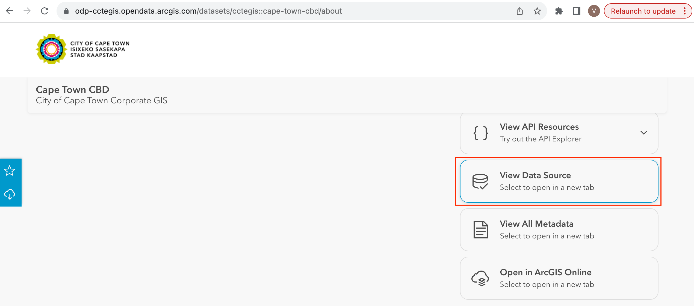
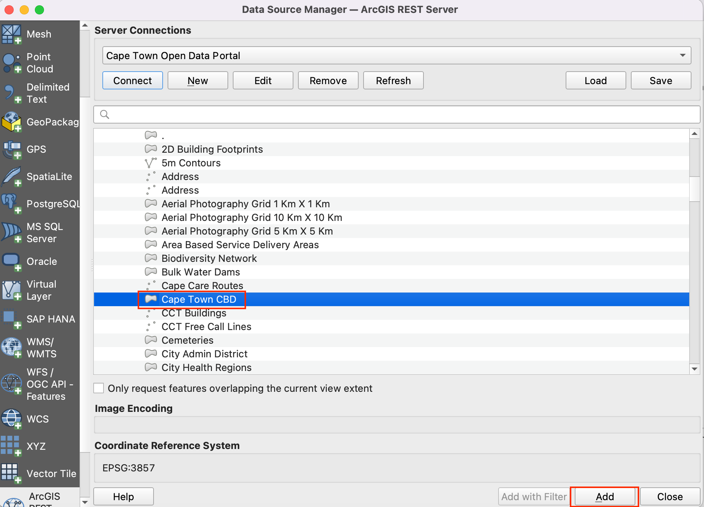
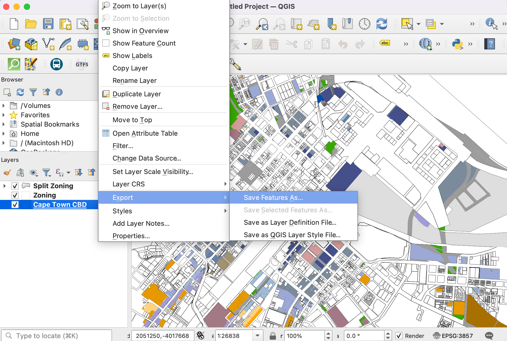
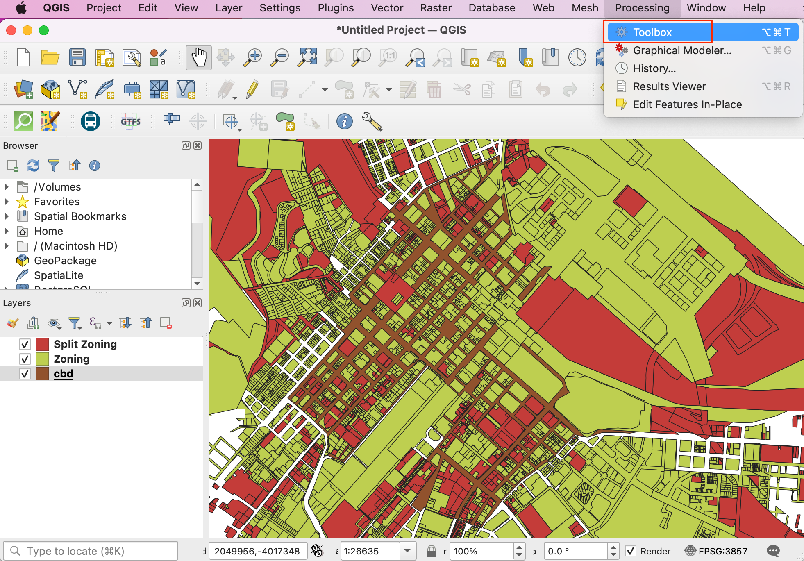
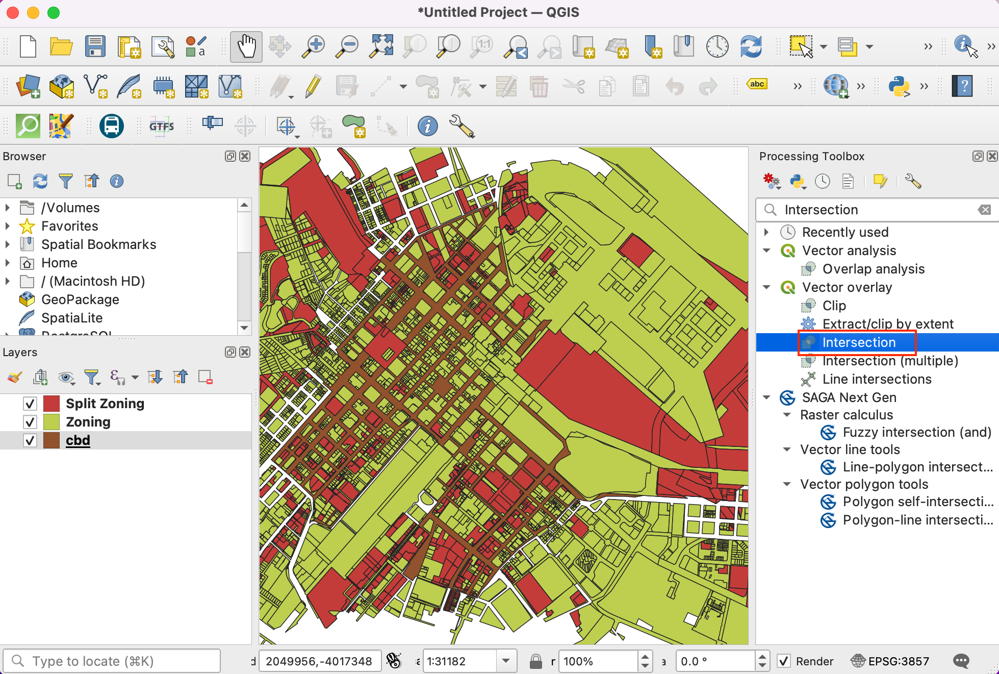
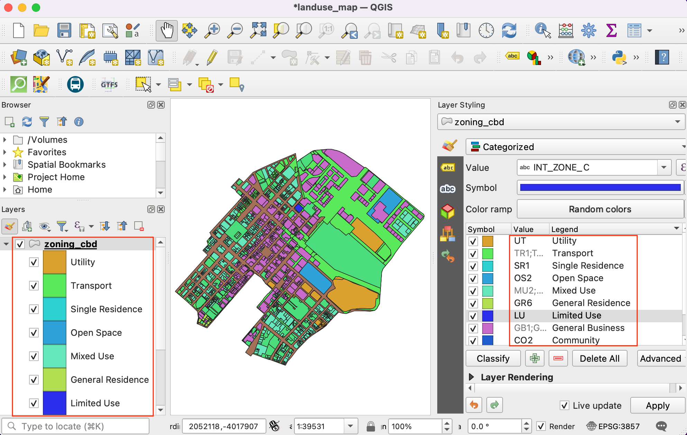
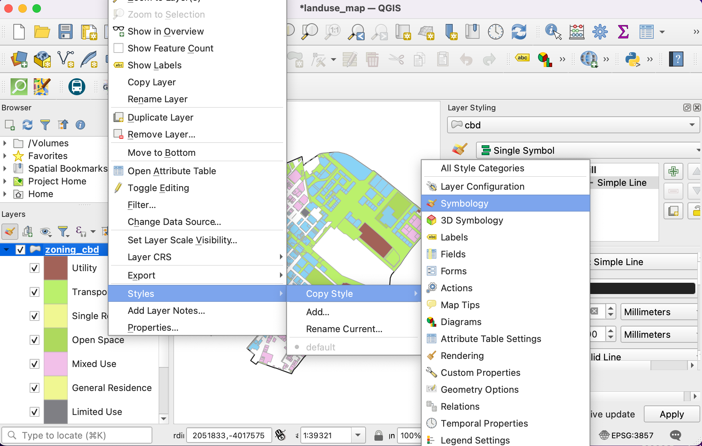
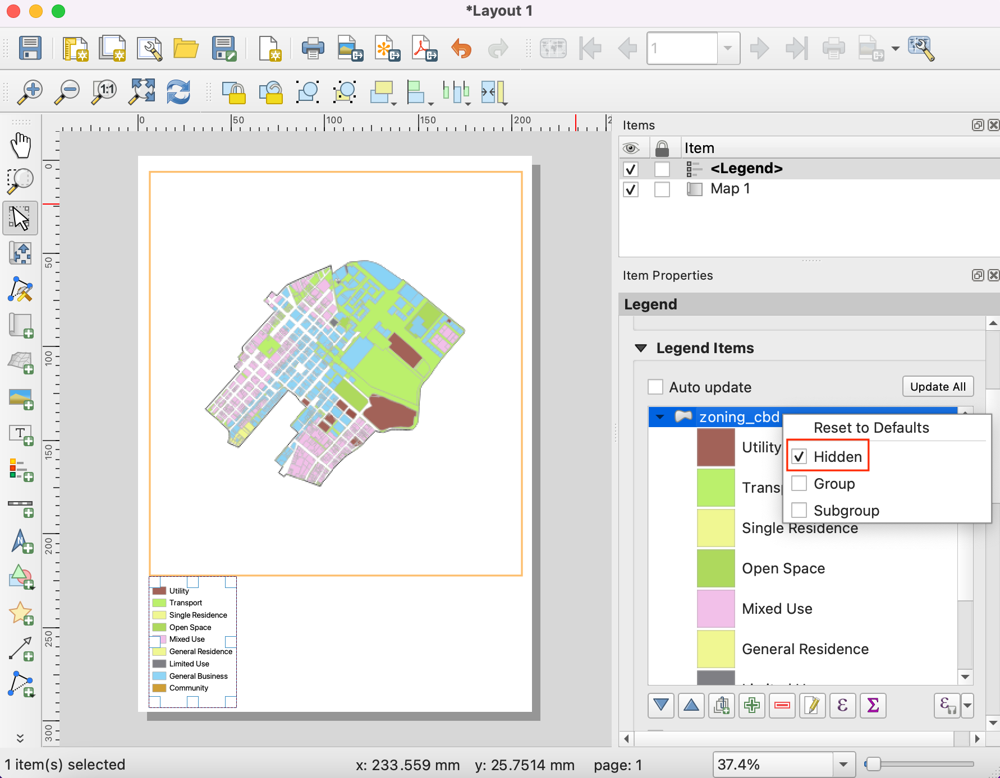
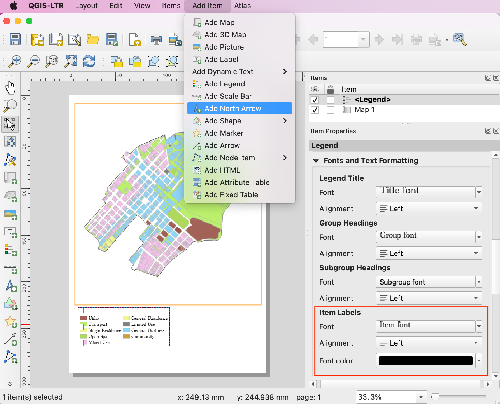

Ujaval Gandhi
Ujaval GandhiCreating a Landuse Map (QGIS3)¶
Zoning designations define and regulate what kinds of uses are allowed on specific parcels and outline design and development requirements and guidelines. In this tutorial you will learn how to access parcel datasets, style them according to zoning attributes and create a map.
Overview of the task¶
You will work with a land parcels dataset with zoning information and create a map showing zoning pattern across the CBD region of Cape Town.

Other skills you will learn¶
How to access and download data from ArcGIS REST in QGIS.
How to extract features from a layer that intersect a boundary layer.
How to merge different sub-categories from Categorized renderer.
Get the data¶
You can find the data for the tutorial from Cape Town Open Data Portal - https://odp-cctegis.opendata.arcgis.com. We will be importing data from the portal using ArcGIS REST server URL and will be preparing three layers mentioned below .
Zoning layer: A polygon shapefile with zoning code and description for land parcels having a single zoning - clipped to the Cape Town CBD area.
Split-zoning layer: A polygon shapefile with zoning code and description for land parcels having multiple zoning - with each polygon split into single zones polygons.
Cape Town CDB Area: A polygon demarcating the Cape Town CBD area.
Let’s see the step wise to prepare the dataset for this tutorial.
Go to the Data Portal - https://odp-cctegis.opendata.arcgis.com/. We will search for the Cape Town CBD data in the search bar and click to browse further.

Click on View Full Details to explore services available to get the data.

Scroll down to find View Data Source and click on the it.
On the ArcGIS REST Services Directory , Go to Home and copy the URL of that page. The copied URL looks like - https://citymaps.capetown.gov.za/agsext/rest/services/.

Now, Open QGIS and go to .

The list of data sources is seen in the left panel. Scroll down to find . Click on new to create new server connection.

In the Connection Details, give the Name
Cape Town Open Data Portaland paste the copied url as an input for URL.
Click Ok and then Connect to see the data folders available in the server.

Now we will search for all three layers required for the tutorial from the database. Firstly, we will open
Cape Town CBDlayer in the QGIS. Expand folders to browse to the layers. Full path to the layer is . Select the layer and click Add.Close the to see the layer added to the QGIS. Click on to centre and display the layer on the canvas.

Now, will add the
Zoninglayer using Data Source Manager.Connect toCape Town Open Data Portaland browse toZoninglayer. The full path is . This is a very large layer, so make sure to check the box Only request features overlapping the current view extent to avoid loading all the features available in the layer. If you forget this, loading of the layer may take a long time. Click Add to open in the QGIS.
Similarly add
Split_Zoninglayer. The full path is - .
We can see all three source layers are open in QGIS. We want to clip the
ZoningandSplit Zoninglayers to theCape Town CBDboundary layer. Firstly, let’s save all three layers locally as shapefiles. Right click on theCape Town CBDlayer. Look for Export and click on Save Features As.Set the format ESRI Shapefile and browse to the local folder where you want to save the shapefiles. We will save all the layers related to this tutorial in a single data folder. Save the layer as
cbd. Keep all other options default and click OK. Similarly export other two layers asZoning.shpandSplit Zoningto the same folder.
Remove the layers loaded from server. Select all three layers, and click on Remove Layer/Group icon. We want to extract features from
ZoningandSplit Zoninglayers intersecting withcbdboundary.
Go to from the menubar.
In the toolbax, search for Intersection algorithm and double-click to open.
Select
Zoningas Input layer andcbdas Overlay layer. Keep other options default and proceed to save output to file.
Save the output layer as
zoning_cbdin the data folder and click Run.
Depending on your Processing settings, you will see some errors or warnings displayed in Log tab. The input layer has some invalid geometries and it is being skipped while running intersection. We will fix geometries of
ZoningandSplit Zoninglayers before taking the intersection to extract all geometries.
Remove the intersection output from QGIS and data folder. Search for tool in the processing toolbox. Double-click to open.

Select
Zoningas Input layer. Keep all the other inputs as default and save the output layer aszoning_fixed.shpin the data folder by clicking Save to File. Click Run. Repeat the process for fixing geometries onSplit Zoninglayer and save the layer with fixed geometries assplit_zoning_fixed.shp.
Remove
ZoningandSplit Zoninglayers. We will move ahead with extracting features fromzoning_fixedandsplit_zoning_fixedlayers which intersectcbd. Search for from the processing toolbox and double-click to open.
24.Select Zoning_fixed as Input layer and cbd as Overlay layer to perform intersection as described in steps 18 and 19. Save the output as zoning_cbd and repeat the same for split_zoning_fixed layer and save the output layer as split_zoning_cbd.

For convenience, you may directly download a copy of all three pre-processed layers from the links below:
Procedure¶
Open QGIS. Click icon to add layers to work on for the tutorial.

Switch to the Vector tab and use the browsing button to navigate to the folder where you have kept the processed shapefiles.

Select
cbd.shp,zoning_cbd.shpandsplit_zoning_cbd.shpfiles and click Open.

You will see all three file paths in the text box beside Vector Dataset. Click Add followed by Close.

As we work on the exercise, it is important to save our work. Go to .

Save the project to the data directory as landuse_map.qgz file. The QGIS Project file contains references to the data layers and saves styles, map templates etc.

Select the
zoning_cbdlayer and click the Open Attribute Table button in the Toolbar. Note that the attributeINT_ZONE_Chas the zoning codes andINT_ZONE_Dhas the zoning description. Close the attribute table.

Now let’s style the layer based on these attributes, so the parcels with the same zoning codes are styles in the same color. Click the Open the Layer Styling panel button in the Layers panel. Click the dropdown button next to Single Symbol.

Select Categorized as the renderer. Select
INT_ZONE_Cas the Value. Click Classify.
You will see a series of symbols appear. There is a different color symbol assigned for every unique code in the layer.

Notice that each zoning category has sub-categories. The
General Business (GB)category has further sub-divisions likeGB1,GB2, and so on. For the purpose of this map, we can merge all the sub-categories to a single top-level category. Hold the Shift key and select all sub-categories. Right-click and select Merge Categories.
Repeat the process for
MUandTRcategories. Once merged, we can now change the Legend label to be more descriptive. Click on the Legend label to rename a class.
Enter descriptions of each zoning category based on the values given in the
INR_ZONE_Dcolumn. As you enter those description, you will see the legend of the layer in the Layers panel also updates.Now we can update the colors and symbology of each category. Click on the Symbol for a category.

Change the Fill color and Stroke color of the symbol to a color of your choice.

Repeat the process for each category. The last category is all other values. This category contains all parcels which have NULL values. This is because those parcels have multiple zoning categories attached to them and are represented in the split_zoning_cbd.shp layer. We do not need them in this layer. Select it and click the - icon to remove that category.

Next, select the
cbdlayer. Change the symbol to Simple Line and increase the Stroke width.
The
split_zoning_cbd.shplayer contains all parcels that were missing zoning codes in the zoning_cbd layer. The attribute table and values for the zones in thesplit_zoning_cbdare the same as thezoning_cbdlayer. Instead of configuring the symbology for this layer manually, we can copy/paste the styles. Select the zoning_cbd layer, right-click and select .Now select the newly added
split_zoning_cbdlayer, right-click and select .
You will see the same symbology being applied to the polygons in the
split_zoning_cbdlayer. The styling and legend are complete now.
We have our layers styled and legend labels created. Now let’s create a map using these styled layers along with map elements like, scale bar, north arrow, labels etc. QGIS comes with a Print Layout that allows composing maps. Go to . When prompted for a name, you can leave it blank and click OK.

In the Print Layout window, you will see a canvas. Right-click and select Page Properties.

Set the Orientation to
Portrait. Next, go to .
Hold the left mouse button and draw a rectangle on the canvas. This is the map frame which will contain the map from the main QGIS window. In the Item Properties tab, use the Interactively Edit Map Extent icon to pan/zoom the content of the map frame.

Scroll down in the Item Properties tab and check the Frame option. Expand it and select a Color for the frame border. You can also increase the Thickness.

The map frame is now ready. Let’s add other elements. Go to .

Drag a rectangle where you want to place the legend. Once added, scroll down in the Item Properties tab and un-check the Auto update button so we can manually edit the legend items.

We have 2 layers with identical legends, so we can remove one of them. Select the
split_zoning_cbdlayer and click the Remove selected item(s) from legend icon. Similarly removecbdlayer from the legend.
Right-click the
zoning_cbdlayer and check the Hidden option.Scroll down and expand the Columns section. Check the Split layers option and increase the Count to 2.

Scroll down further to the Spacing section. Adjust the spacing between different elements till the legend is clearly legible.

You can change style and size of the fonts in legend from Fonts and Text Formatting properties. When done, go to . Drag a rectangle where you want to place the element on the map.
Pick a symbol of your choice. Scroll down and expand the SVG Parameters. Change the Fill color and Stroke color as per your choice.

Now we will add a Scale Bar. Go to . Drag a rectangle where you want to place the element on the map. Adjust the Style and Segments parameters for the scale bar.

Our map needs a title and other information labels. Go to .

Enter a map title in the Main Properties section. Click the Font button under Appearance section to adjust the font size and style.

Add other labels indicating the data source and your name. Lastly we will finish our map by adding a frame around the label block. Go to .

Draw a rectangle. Click the symbol for Style and set the Fill Color to transparent and Stroke color to match other frames.
Once you are satisfied with your composition, you can export the result. Go to . Save the PDF in your data folder as
capetown_zoning_map.pdf.
If you want to give feedback or share your experience with this tutorial, please comment below. (requires GitHub account)